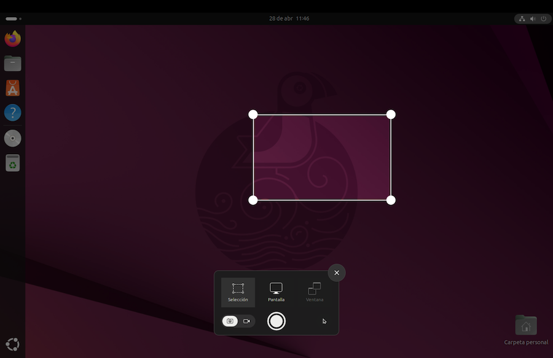
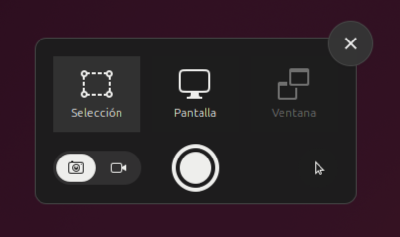
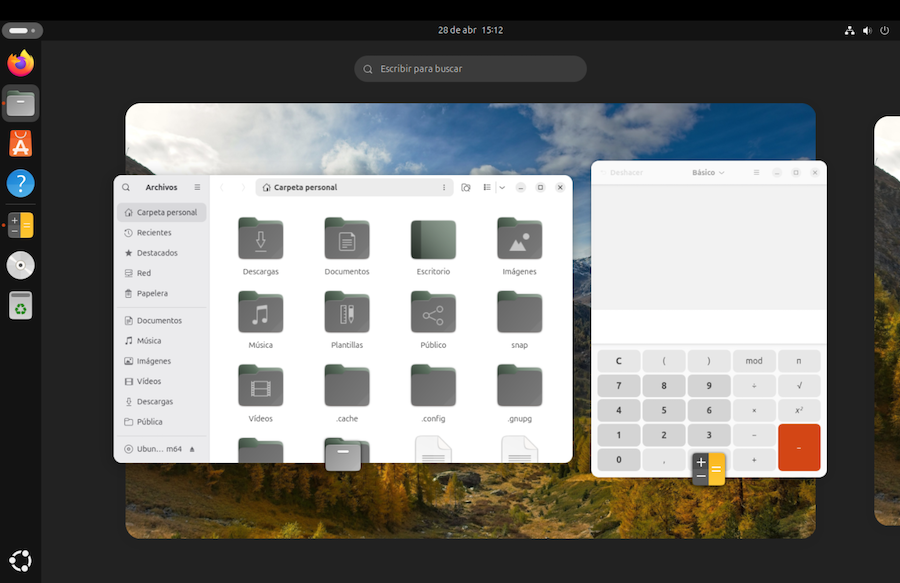
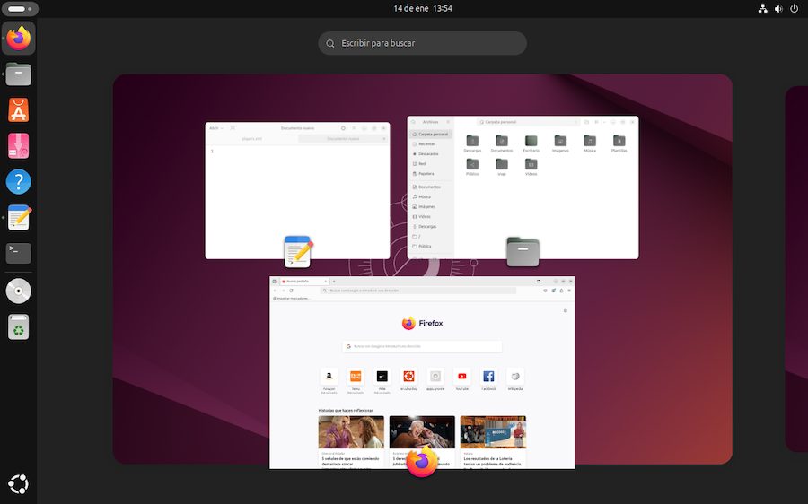
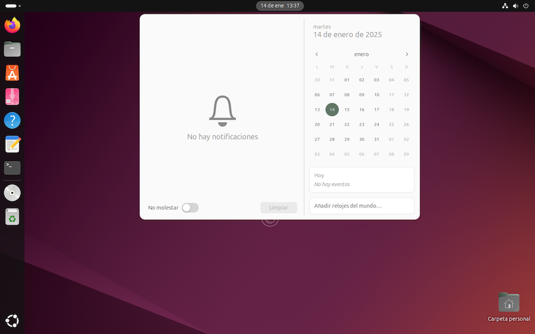
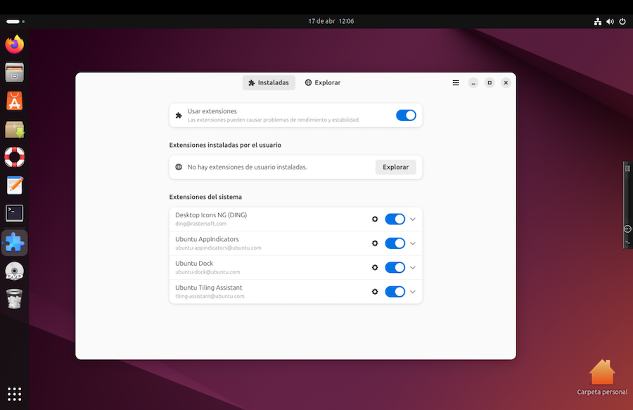
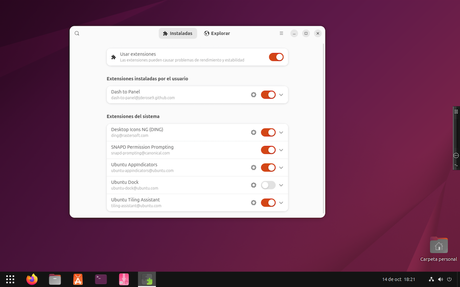
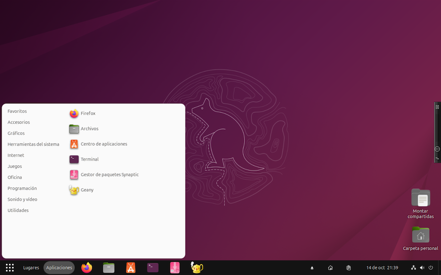

El escritorio de Ubuntu¶
A lo largo de este cuaderno ya hemos ido viendo el funcionamiento del escritorio de Ubuntu. Ahora haremos un repaso de algunas de sus características. Tenemos la guía de uso en este enlace.
El Dock¶
La barra lateral del escritorio se denomina Dock, y es un añadido de Ubuntu al escritorio de Gnome. Podemos pulsar en cualquier icono del Dock para iniciar la aplicación correspondiente o para seleccionar una de las ventanas abiertas.
El Dock muestra los iconos de las aplicaciones favoritas y las que están en ejecución. Para mantener permanentemente una aplicación en el Dock, ejecutarla, pulsar con el botón secundario del ratón sobre el icono del Dock , y seleccionar la opción Pin to Dock. Una vez añadida la aplicación al Dock, desaparecerá de la parrilla. Alternativamente, la operación Pin to Dock también está disponible visualizando la parrilla de aplicaciones y pulsando sobre la elegida con el botón secundario del ratón.
Cuando un icono del Dock muestra uno o varios puntos, significa que hay abiertas una o varias ventanas de esa aplicación. Pulsando sobre el icono con el botón secundario del ratón, se muestra la lista de ventanas para seleccionar una de ellas o abrir una nueva.
Podemos reorganizar los iconos en el Dock. Basta con arrastrarlos a su nueva posición. Para quitar un icono del Dock, pulsar con el botón secundario del ratón y seleccionar "quitar".
Para ocultar el Dock, acudir a la configuración del sistema, apartado Escritorio > Dock. Podemos hacer que se oculte o muestre cuando acercamos el puntero del ratón al borde de la pantalla. También podemos cambiar el tamaño de los iconos, o llevar el Dock al costado derecho o inferior del escritorio.
La papelera y los dispositivos externos conectados se incluyen automáticamente en el extremo de la barra. Su visualización se puede activar o desactivar acudiendo a la configuración del sistema, apartado Escritorio > Dock > Comportamiento.
La parrilla (grid)¶
La parrilla de aplicaciones es complementaria del Dock. Podemos organizar los iconos de la parrilla arrastrándolos para ordenarlos a nuestro gusto.
No todas las aplicaciones instaladas se muestran el la parrilla. Ubuntu selecciona solo las que considera más importantes, y de esa selección, excluye las incorporadas al Dock.
Para incorporar manualmente una aplicación a la parrilla, tenemos que crear un lanzador (un icono de escritorio). Los lanzadores son archivos que se explican más adelante. Son ficheros de texto con especificaciones, y cuyo nombre lleva la extensión .desktop. Ubuntu acude a unos directorios especiales que contienen los lanzadores a incluir en la parrilla. Estos directorios son:
-
a nivel de usuario:
~/.local/share/applications -
a nivel global:
/usr/share/applications
Podemos agrupar los iconos de la parrilla en forma de carpetas. Para crear una carpeta con dos iconos, arrastrar uno sobre el otro. Se unirán los dos en un grupo. Para añadir otros iconos al grupo, arrastrarlos a esa carpeta.
Para editar el nombre de un grupo, pulsar sobre el mismo y, una vez abierto su contenido, editar la cabecera.
Para eliminar un grupo, arrastrar los iconos fuera del mismo.
Capturar pantalla¶
Pulsando la tecla Print Screen podemos abrir la aplicación de Captura de Pantalla:

Teclados Mac
Como lo que tenemos en este cuaderno es un teclado Mac, nos encontraremos con que no hay tecla Print Screen. Podemos simular una pulsación de esta tecla mediante el menú de VMWare, máquina virtual > enviar tecla > Impr Pant. Tendremos un mejor acceso a esta función si activamos la visualización de la minibarra, como se explicó en el apartado dedicado a la instalación del sistema.
También podemos iniciar la Captura de Pantalla desde el menú desplegable del sistema, donde encontraremos un icono al lado del de configuración:

Al ejecutarse la captura de pantalla, muestra un recuadro con seis iconos:

cuyo significado de izquierda a derecha y de arriba abajo es:
- capturar el área seleccionada con el ratón
- capturar la pantalla completa
- capturar la ventana activa
- seleccionar entre capturar imagen o grabar video
- botón para hacer la captura
- mostrar puntero en la captura (si/no)
Al pulsar en el botón Capturar, se guarda una imagen en la carpeta /Imagenes/Capturas de pantalla.
Como alternativa de la aplicación de captura de pantalla, podemos instalar otros programas similares acudiendo al Centro de Aplicaciones. Por ejemplo, podemos instalar spectacle, que forma parte del escritorio Plasma de KDE.
Múltiples escritorios¶
Cuando tenemos varias ventanas de aplicaciones en ejecución, podemos seleccionar una u otra:
- pulsando en la ventana correspondiente
- pulsando en el icono de la aplicación en la barra lateral (el Dock)
- recorriendo la lista de aplicaciones con la combinación de teclas Alt+Tab
Si tenemos muchas aplicaciones abiertas, podemos utilizar varios escritorios (áreas de trabajo), y poner las aplicaciones en uno u otro. De forma predeterminada, Gnome tiene dos espacios de trabajo disponibles, el original y uno adicional vacío. A medida que vayamos utilizándolos, se añadirá automáticamente uno vacío.
Si cerramos ventanas y vaciamos un escritorio, las áreas de trabajo sobrantes se suprimirán, manteniendo siempre un único escritorio vacío.
Para pasar de un escritorio a otro, pulsar Ctrl+Alt+Right o, para hacerlo en sentido contrario, Ctrl+Alt+Left. Para utilizar un área de trabajo, desplazarse hacia ella y abrir allí las aplicaciones deseadas.
Podemos obtener una vista conjunta de todas las áreas, y navegar de una a otra. Para ello, pulsar en el icono "Actividades", en la esquina superior izquierda del escritorio. Podemos arrastrar ventanas de un área a otra.

La barra Dash¶
El escritorio Gnome original, sin los añadidos de Ubuntu, no tiene una barra Dock de aplicaciones favoritas. En su lugar, al pulsar en el botón de Actividades, en la esquina superior izquierda, se visualizan las áreas de trabajo y una barra inferior de favoritos, llamada Dash, que incluye un icono para visualizar la parrilla de aplicaciones.

Tecla Super¶
En los teclados Mac hay una tecla Cmd que Linux toma como tecla Super. En otros teclados puede ser la tecla Win u otra diferente, en todo caso, según tengamos configurado WMware. Una vez identificada la tecla que sirve como Super, podemos configurar su uso en el apartado de configuración del sistema, apartado Teclado.
En el escritorio, pulsando en Super se muestra la vista general de ventanas y áreas de trabajo:

Avisos y agenda¶
En el centro de la barra superior del escritorio tenemos un reloj y fecha. Pulsando ahí, se abre una ventana de notificaciones y calendario. Pulsando en uno de los días, se abre una agenda que nos permite programar avisos.

Personalizar el escritorio¶
La configuración del sistema nos permite personalizar el aspecto que tiene el escritorio:
-
Para cambiar la imagen del fondo, descargamos algún fondo de escritorio que nos guste (por ejemplo, desde Pixabay o desde Pexels), y en la aplicación "Configuración del Sistema" buscamos el apartado Apariencia > Fondos de Escritorio > Añadir imagen. Tomamos la imagen de la carpeta de Descargas, añadiéndola a los fondos de escritorio, y la seleccionamos como fondo.
-
En el apartado Apariencia > Estilo seleccionar un color para iconos, ventanas, etc.
Mostrar icono de carpeta personal¶
Para ocultar o mostrar el acceso a la carpeta personal en el escritorio, ir a la Configuración > Iconos > Mostrar carpeta personal.
Gnome Tweaks¶
Más allá de las opciones estándar de personalización del escritorio, contamos con una utilidad llamada GNOME Tweaks (retoques de GNOME), que proporciona opciones añadidas de configuración, tipografías, cambiar el juego de iconos, las áreas de trabajo, el comportamiento del ratón, etc.
Esta aplicación se instala abriendo el terminal y ejecutando el comando:
$ sudo apt install gnome-tweaks
Para ejecutarla, introducir el comando:
$ gnome-tweaks
o bien, en la rejilla de aplicaciones, buscar una llamada "retoques".
Podemos usarlo, por ejemplo, para cambiar el juego de iconos (menú Apariencia > Estilos).
Extensiones¶
Gnome es un escritorio excesivamente minimalista, pero podemos ampliar sus funcionalidades con extensiones. El proyecto oficial da soporte a muchas de ellas en la página web https://extensions.gnome.org.
De hecho, Ubuntu trae de serie algunas de esas extensiones ya instaladas. Podemos hacer nuestros propios añadidos para personalizar la experiencia. Para descargar e instalar extensiones, tenemos que instalar el programa gestor de extensiones con el comando:
$ sudo apt install gnome-shell-extension-manager
lo que dejará en la rejilla de aplicaciones una nueva aplicación "Extensiones".
Al ponerlo en marcha, vemos las que trae Ubuntu por defecto:

Veamos algunas extensiones para mejorar el escritorio de Ubuntu. Vamos a instalar:
-
Dash to panel. Sustituye la barra del Dock de Ubuntu por una barra Dash mejorada en el borde inferior del escritorio, con más funcionalidades. Integra la barra superior de Gnome:

Como podemos ver, muestra un funcionamiento más cercano a los escritorios tradicionales. Pero no integra, por defecto, el botón de actividades que teníamos en la esquina superior izquierda. Podemos activar su visualización entrando en la configuración de la extensión.
Configurar extensiones
Las extensiones se configuran seleccionando cada una de ellas en el gestor de extensiones, y pulsando en el icono de configurar (rueda dentada ⚙ ) si está disponible.
-
Apps Menu. Añade un menú desplegable de aplicaciones, que convive con la rejilla de Gnome:

-
Places Status Indicator. Añade un menú desplegable con las principales carpetas de usuario. En la barra Dash se muestra como "Lugares"
-
Clipboard indicator. Añade un pequeño icono a la barra de indicadores, mostrando el contenido del portapapeles al pulsar sobre el mismo
-
Removable Drive menu. Añade un pequeño icono a la barra de indicadores, mostrando los dispositivos externos conectados (pendrives, etc) y permitiendo expulsarlos.
-
Show desktop button. Añade un pequeño icono a la barra de indicadores, permitiendo minimizar todas las ventanas o volver a mostrarlas.
Iconos en el escritorio¶
Gnome no proporciona la posibilidad de poner iconos de aplicaciones y archivos en el escritorio, pero Ubuntu añade esta opción mediante la extensión Desktop Icons.
Para arrastrar un documento o carpeta al escritorio, basta con hacerlo desde el Gestor de archivos. Si pulsamos la tecla Ctrl al mismo tiempo, en lugar de arrastrar, haremos una copia del documento o carpeta.
El contenido del escritorio es en realidad un reflejo de la carpeta /home/usuario/Escritorio, por lo que si abrimos esta en el Gestor de Archivos, también podemos gestionar el contenido del escritorio añadiendo o suprimiendo elementos.
Lanzadores en el escritorio¶
En líneas generales, los programas se pueden ejecutar:
- pulsando en los iconos de la barra lateral, el dock
- buscando en los iconos de la parrilla de programas
- desde el terminal de comandos, introduciendo el nombre del programa.
Una cuarta opción es crear "lanzadores" en el escritorio. Son iconos sobre los que podemos pulsar para ejecutar una acción.
Veamos un ejemplo. Crearemos un lanzador para la calculadora. Lo primero es ejecutarla y abrir el programa Monitor del Sistema. Descubrimos que la calculadora es en realidad un programa llamado gnome-calculator.
Cerramos la calculadora. Abrimos un terminal de comandos y comprobamos el comando a ejecutar:
$ gnome-calculator
Esto debería abrir la calculadora en otra ventana. La cerramos.
Lo siguiente es situarnos en la carpeta de escritorio:
$ cd ~/Escritorio
Los lanzadores son archivos de texto con la extensión .desktop. Creamos uno con:
$ touch calculadora.desktop
Vamos a editar el contenido:
$ gnome-text-editor calculadora.desktop
El texto serán las especificaciones técnicas del lanzador:
[Desktop Entry]
Name=Calculadora
Comment=La calculadora de Gnome
Exec=gnome-calculator
Terminal=false
Icon=/home/usuario/Images/iconoPrograma
Type=Application
Todo esto son las directrices que necesita un lanzador. En el ejemplo, vemos una línea con el comando a ejecutar para iniciar el programa:
Exec=gnome-calculator
El tipo de lanzador se indica en la línea:
Type=Application
El nombre que se mostrará bajo el icono:
Name=Calculadora
Guardamos el contenido del archivo. Seguidamente, tenemos que asignarle permisos de ejecución:
$ chmod +x ~/Escritorio/calculadora.desktop
Finalmente, tenemos que hacer que el lanzador sea "de confianza". Pulsar con el botón secundario del ratón sobre el nuevo icono del escritorio y seleccionar la opción "permitir lanzar".
En realidad hay una forma más cómoda de hacer todo esto. Podemos copiar los lanzadores ya existentes (los que se utilizan para ser mostrados en la parrilla de aplicaciones, por ejemplo). Para ello, examinar la carpeta /usr/share/applications. El lanzador de la calculadora es un archivo llamado org.gnome.Calculator.desktop. Podemos copiarlo a la carpeta ~/Escritorio, pero tendremos que repetir la maniobra de "permitir lanzar" en el icono del escritorio.
Especificaciones de los lanzadores
Los lanzadores son archivos de texto cuyo formato se corresponde con el proyecto Freedesktop.org. Ver especificaciones en la página web del proyecto.
Un lanzador para montar y desmontar carpetas compartidas¶
Vamos a crear un lanzador que ejecute un script para conectar y desconectar el acceso a carpetas compartidas de la máquina física, de forma que limitemos su visibilidad sin necesidad de tenerlas expuestas permanentemente.
Abrimos el Terminal y nos situamos en la carpeta principal del usuario:
$ cd
Creamos el scrip:
$ touch montar_compartidas.sh
Los scripts son pequeños programas consistentes en una lista de comandos a ejecutar. Lo de ponerles la extensión .sh es optativo. Es la abreviatura de "shell".
Abrimos el archivo con el editor de textos:
$ gnome-text-editor montar_compartidas.sh
El texto del archivo puede ser algo así como:
| montar_compartidas.sh | |
|---|---|
1 2 3 4 5 6 7 8 9 10 11 12 13 14 15 16 17 18 19 20 21 22 23 24 25 26 27 28 29 30 31 32 33 34 35 36 37 38 39 40 41 42 43 44 45 46 47 48 49 50 51 52 53 54 55 56 57 58 59 60 61 62 63 64 65 66 67 68 69 70 71 72 | |
Ya hemos hablado del intérprete de comando bash. Cuenta con todo lo necesario para convertirse en todo un lenguaje de programación, y a este tipo de archivos con comandos a ejecutar se les llama scripts.
En realidad, no hace falta que entendamos muy bien el texto de este archivo. Basta con copiar y pegarlo (los números de línea que se muestran aquí no forman parte del texto). Algunas observaciones:
- las líneas que comienzan con
#son "comentarios". Se insertan en el script a efectos de documentación. - la primera línea ha de ser:
#!/bin/bash, para que el sistema operativo lo identifique como script a ejecutar -
tenemos que revisar la línea 12:
RUTA=/mnt/compartidassustituyendo la ruta
/mnt/compartidaspor la que corresponda. Debe tratarse de una carpeta ya existente, donde se van a montar las carpetas compartidas. Si no existe, podemos crearla con la siguiente secuencia de comandos:$ cd /mnt $ mkdir compartidasmkdires el comando que crea nuevos directorios en la carpeta actual ("make directory").
Guardamos el texto del archivo y cerramos el editor. Damos permisos de ejecución al script con el comando:
$ touch +x ~/montar_compartidas.sh
Lo ejecutamos desde el terminal de comandos, para verificar su correcto funcionamiento:
$ cd
$ ./montar_compartidas.sh
Esto muestra las carpetas actualmente compartidas, y un menú de opciones:
Acceso a carpetas compartidas de la máquina host.
Carpetas actualmente montadas y accesibles:
no hay carpetas compartidas
---------------------------------------------------
Seleccione:
M. Montar carpetas
D. Desmontar carpetas
S. Salir
Introduzca opción M/D/S seguida de Intro:
Pulsamos M para montar las carpetas, D para desmontarlas, o S para finalizar la ejecución del script, seguido de Enter. La primera vez que montemos o desmontemos las carpetas, se nos pedirá la contraseña de usuario:
Montar carpetas.
Se intentará con las establecidas en la configuración VMware de la máquina virtual
[sudo] contraseña para usuario:
Al intentar desmontar una carpeta, se mostrará un mensaje de error si cualquier programa está haciendo uso de ella.
Este script puede ejecutarse desde el terminal de comandos, pero lo que nos interesa es crear un lanzador en el escritorio. Nos situamos en la carpeta ~/Escritorio:
$ cd ~/Escritorio
Creamos el lanzador:
$ touch montar_compartidas.desktop
Es un archivo de texto. Editamos su contenido:
[Desktop Entry]
Name=Montar compartidas
Comment=Montar/desmontar directorios compartidos
Exec=/home/usuario/montar_compartidas.sh
Terminal=true
Icon=/usr/share/icons/Humanity/actions/48/gtk-open.svg
Type=Application
Véase que en el apartado Exec ponemos el script a ejecutar. Como icono hemos seleccionado uno de la carpeta /usr/share/icons.
Tras pulsar sobre el icono en el escritorio y seleccionar la opción "permitir lanzar", ahora tendremos una forma cómoda de desconectar las carpetas compartidas de la máquina física.
Enlaces a carpetas¶
Para poner en el escritorio un icono que muestre el contenido de una carpeta, podemos crear un lanzador que abra el gestor de archivos, Nautilus:
$ cd ~/Escritorio
$ touch carpetas_compartidas.desktop
Editamos el contenido del fichero:
[Desktop Entry]
Name=Compartida
Comment=Carpetas compartidas
Path=/mnt/compartidas/micarpeta
Exec=nautilus --new-window /mnt/compartidas/micarpeta
Icon=org.gnome.Nautilus
Terminal=false
Type=Application
El apartado Exec establece que se ejecute Nautilus, en una nueva ventana si ya está abierto, y mostrando la carpeta especificada. El apartado Path establece cual es la carpeta de trabajo. Si no está montada, la pulsación sobre el lanzador no tendrá efecto.